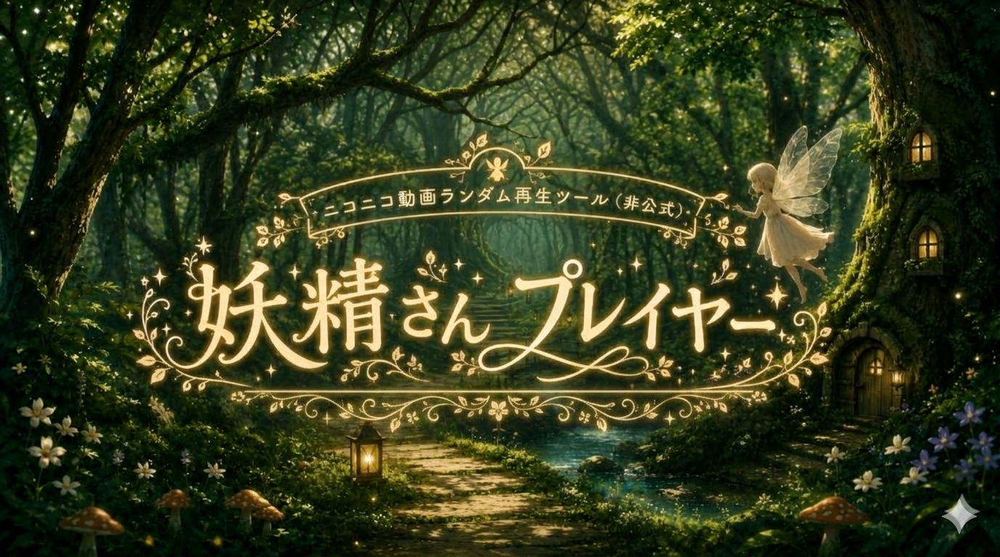

ニコニコ動画ランダム再生ツール（非公式）
問い合わせなどはこちらから https://x.com/hitoiki327882

タグ検索とキーワード検索、どちらか一方だけでも使えます。
あ、タグ探索マップってツール、知ってる？
・半角、全角スペースを加えて複数入力した場合、すべて含む（AND）結果がでます。 ニコニコ動画でのタグ検索結果とヒット件数が異なる場合があります。原因は不明です。
森の奥には、まだたくさんの動画があるよ。
キーワード検索はタイトル・動画詳細欄を参照します。
Wikipediaの記事タイトルをランダムで取得することができます
入力中の単語から、類義語・関連語をWikipediaで探して「いずれか含む（OR）」に広げます
投稿時のジャンルで動画を探す場所を選びます。 ・ボカロ・音楽系：「音楽・サウンド」 ・ボイロ・解説・劇場系：「音楽・サウンド」以外
・クリックすると、ニコニコ動画に飛びます。
・最新の５件を表示しています
・新しいウィンドウが開きます